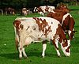

grazing

Definition: In agriculture, grazing is a method of animal husbandry whereby domestic livestock are allowed outdoors to roam around and consume wild vegetations in order to convert the otherwise indigestible (by human gut) cellulose within grass and other forages into meat, milk, wool and other animal products, often on land unsuitable for arable farming.
Source: Wikipedia
Wikipedia Page
Wikidata Page
Occurs in: